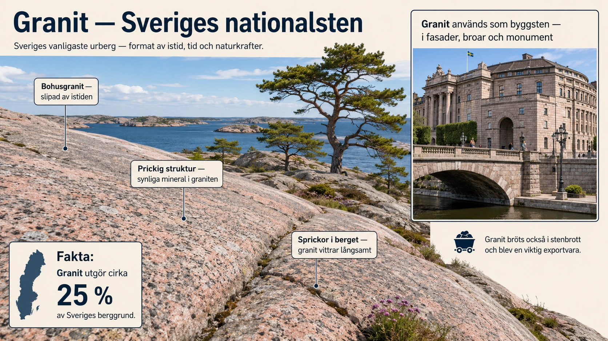

Sveriges osynliga fundament
När du går genom en svensk stad, kör längs E6 genom Bohuslän eller står på en klippa vid Östersjön — du står ofta på samma bergart. Granit. Den är så vanlig i Sverige att vi knappast lägger märke till den. Men granit är inte bara berggrund. Den är samhällsfundament, exportvara, monument-material och kulturell ikon. Att förstå granitens roll i Sverige är att förstå en del av hur naturgeografi och samhällsgeografi vävs samman över tusen års tid.
I 8A och 8B har vi lärt oss vad granit är — en magmatisk djupbergart bestående av fältspat, kvarts och glimmer. I denna djupdykning tittar vi på hur granit blev Sveriges kanske mest betydelsefulla bergart, både geologiskt och historiskt.

Hur Sveriges granit bildades
Granit bildas djupt nere i jordskorpan, ofta 5-30 kilometer under markytan, där temperatur och tryck är så höga att berg smälter till magma. Magman är trögflytande och rör sig långsamt uppåt i jordskorpan, men i de flesta fall når den aldrig ytan. Istället stannar den på djupet, och börjar svalna när omgivningen är något kallare än magman själv.
Denna avsvalning sker mycket långsamt — under tusentals till miljontals år. Det är just detta som gör graniten så pedagogiskt vacker. När magman svalnar långsamt hinner mineralerna växa till tydliga kristaller. Fältspat ordnar sig i blockiga, rektangulära korn. Kvarts kristalliserar i sina karakteristiska glasiga former. Glimmer bildar sina glittrande fjäll. Allt detta sker långsamt nog att vi kan se det med blotta ögat när berget senare exponeras. Hade magman svalnat snabbt — som lava på jordytan — hade kristallerna förblivit mikroskopiska, och vi hade fått en helt annan bergart (basalt eller liknande).
Den största delen av Sveriges granit bildades för väldigt länge sedan — mellan 900 miljoner och 1,9 miljarder år sedan. För att sätta detta i perspektiv: dinosaurierna existerade för 230-65 miljoner år sedan. Människans fjärran förfader Lucy levde för 3 miljoner år sedan. När Sveriges granit bildades fanns inte ens komplext liv på land — bara enkla organismer i havet, eller mindre än så.
Hur granit hamnade vid ytan
Ett mysterium löser sig när man tänker efter: om granit bildades 5-30 kilometer ner — hur kan vi gå på den idag? Svaret är erosion över mycket långa tidsperioder.
Under hundratals miljoner år har de bergarter som ursprungligen låg ovanpå graniten vittrats och eroderats bort, lager för lager. Det är som om naturen sakta skalat fram graniten genom att slita ner det som låg ovanpå. Sverige har vad geologer kallar exhumerat urberg — gammal djupbergart som är blottad eftersom allt yngre material slitits bort.
Den sista omgången skalning skedde under istiden. Under flera miljoner år rörde sig inlandsisar fram och tillbaka över Skandinavien, och slipade den slutgiltiga ytan på granit-landskapen. Det är därför svenska granitklippor ofta är så rundade och slipade — de är inte naturlig form av granit, utan istidens skulptering. Den klassiska svenska "berghällen" eller "rundhällen" är granit som passerat under inlandsisens slipande verkan.
Bohus-granit — Sveriges berömdaste
Ett särskilt klassiskt granitområde i Sverige är Bohuslän, i Sveriges sydvästra hörn. Här finns vad geologer kallar Bohus-graniten — en relativt ung granit som bildades för ungefär 920 miljoner år sedan (alltså "bara" 920 miljoner år, jämfört med urbergens 1,8 miljarder).
Bohus-granit har särskilda egenskaper som gjort den berömd. Den är rosa-rödaktig tack vare den dominerande fältspaten. Den är hård och hållbar. Och den slipas och poleras väl — vilket betyder att den passar perfekt för monument, gravstenar och fasader. När den poleras till spegelblank yta blir den mycket vacker.
Området kring Bohuslän — från Strömstad i norr ner till Lysekil och Hunnebostrand — har klassiska granitklippor. Vandrar man där idag ser man tydligt landskapet: stora rundade klippor, glittrande från glimmer-prickarna när solen träffar dem, med vindpinade tallar växande i sprickorna. Det är ett av Sveriges mest ikoniska landskap.
Stenhuggarnas tid — 1800-talets exportboom
Det var på 1800-talet som Sveriges granit blev en internationell exportvara. Den industriella revolutionen i Europa skapade enorm efterfrågan på byggsten för städer som växte snabbt. Hamburg, Bremen, Köpenhamn, Stockholm, Sankt Petersburg — alla behövde sten för kajer, monument, broar, palats. Och Sverige hade den.
Stenbrott öppnades runt om i Bohuslän. Hunnebostrand, Brastad, Hovenäset, Skeppshult, Vinga — orter som idag kan kännas som små semesterbyar var en gång industriella centrum för stenhuggning. Hundratals stenhuggare arbetade i brotten. Stora granitblock bröts loss med kilar, sprängdes med svartkrut, och hissades sedan på fartyg för export.
Bohus-granit byggde delar av Sankt Petersburgs kajer — de eleganta granit-byggnaderna längs Neva-floden innehåller svensk sten. Den användes i fasader i Hamburg och Bremen. Den blev byggmaterial för delar av Brandenburger Tor i Berlin. Den användes i broar och monument över hela norra Europa. Sverige blev under en period en av Europas stora granitexportörer.
Stenhuggare blev en egen yrkesgrupp med stark gemenskap och hård vardag. Arbetet var farligt — block föll ner, sprängningar misslyckades, lungsjukdomar från stendamm var vanliga. Många emigrerade till Amerika i slutet av 1800-talet och tidigt 1900-tal, där deras hantverk var efterfrågat i de växande storstäderna. Svenska stenhuggare bidrog till att bygga delar av New York, Boston och Chicago.
Granit i svenska byggnader
Mycket av Sveriges egen granit-export blev självfallet kvar i landet. Klassiska svenska byggnader innehåller granit i fasader, fundament och dekorationer.
Riksdagshuset på Helgeandsholmen i Stockholm har granitfasad — du står på svensk berggrund när du går på Helgeandsholmens kajer. Stockholms slott har granit i fundament och utvalda delar. Nationalmuseum har granitfundament och granitdetaljer. Sjöfartshuset i Göteborg och hamnens kajer är byggda i granit.
Många av Stockholms broar har granit-konstruktioner — Centralbron, Västerbron, Strömbron har granitfundament. Detsamma gäller broarna i Göteborg och Malmö. Och kajerna i alla svenska kuststäder, från Karlstad vid Vänern till Visby vid Östersjön — är ofta byggda i granit, eftersom bergarten motstår vatten och saltbelastning så bra.
Granitarbete blev en kvalitetsmarkör. Att ha "granit-fasad" på sitt hus i ett centrum-läge var ett tecken på rikedom och status under 1800- och tidigt 1900-tal. Många klassiska bankbyggnader, hotell och statliga byggnader i svenska städer har granit som dominerande material — det gav byggnaderna en känsla av solid, oövergivlig kvalitet.
Granit i vardagens monument
Granit är inte bara i stora monumentbyggnader. Den finns runt omkring oss i vardagen — om man bara börjar titta.
Gravstenar är kanske den mest spridda formen av granit i Sverige. Den klassiska svenska gravstenen är ofta polerad granit, antingen rödrosa (Bohus-granit) eller svart (en mörkare granit-variant eller gabbro). Varje svensk kyrkogård är ett museum av polerad sten — och om man tittar noga ser man att mineralerna i graven är desamma som i berget hundra mil bort. Geografi tar plats i begravningsritualerna.
Gatsten och kantsten i svenska innerstäder är ofta granit. Klassiska "gatstenar" som du går på i Gamla Stan i Stockholm eller i Visby är många gånger Bohus-granit. På 1800-talet importerades inte bara från utlandet — varje stad ville ha "äkta" granit i sina representativa gator.
Trottoarkantsten och brunnslocksramar — om du tittar på trottoarkanterna i en gammal svensk stad ser du ofta granitblock. De är så hållbara att de fortfarande används efter 150 år av belastning från vagnar, hästar och senare bilar.
Minnesstenar och statyer-sockel — Karl XII:s staty på Kungsträdgården, Engelbrektstatyn i Arboga, Birger Jarl-monumentet på Riddarholmen — alla står på granitsocklar. Stenen blir en tyst del av monumentet, men den är ofta från svenska stenbrott.
Att se granit idag
För svenska elever som vill se granit "i original" — utanför stenbrott och fasader — finns några klassiska platser värda att besöka.
Bohuslän och dess klippor är förstås det självklara. Vid Smögen, Lysekil, Marstrand och Käringön kan man vandra direkt på granit-hällar och se färgerna och kristallerna med blotta ögat. När solen träffar rätt glittrar glimmer-prickarna som om hela klippan vore strösselad med diamanter.
Skärgården utanför Stockholm har en annan typ av granit — något äldre och med olika färger. Möja, Sandhamn, Utö och Nynäshamn-trakten erbjuder klassiska granit-klippor att utforska.
Bjärehalvön och Hovs Hallar i Skåne har granit-formationer som är pittoreska — med dramatiska klippor mot Kattegatt.
Vinga, utanför Göteborg, är en historiskt klassisk granit-ö. Vingafyren står på granit, och ön själv är ett klassiskt utflyktsmål för granit-vandrare.
Den geografiska principen
Granit är ett exempel på något pedagogiskt viktigt: att naturgeografin och samhällsgeografin är vävda ihop på sätt som vi sällan tänker på. Sveriges granit-resurser har påverkat var stenbrott öppnades, var stenhuggare arbetade, vart de emigrerade, hur svenska städer byggdes, vad Sveriges exportekonomi bestod av på 1800-talet, vilka byggnader vi anser representera "Sverige" idag.
Och granit är inte bara historia. Granit används fortfarande. Modern polerad granit är populär i kök, badrum och kommersiella byggnader. Sverige importerar och exporterar fortfarande granitsten. Bohus-graniten är fortfarande efterfrågad utomlands — bland annat i Mellanöstern och Asien där den exotiska "skandinaviska" karaktären har marknadsvärde.
När du nästa gång ser en granitklippa, en gravsten av polerad rosa sten, en gatsten under fötterna i en gammal stad — kom ihåg. Du tittar inte bara på berg. Du tittar på en miljardar år gammal magmatisk djupbergart, som genom istidens slipning, hundratals miljoner år av erosion, och bara några hundra år av mänsklig industri har blivit en del av Sveriges identitet. Granit har inte bara byggt landet. Den har varit landet.